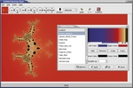
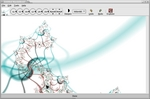

|
Main Window: Most of the window is taken up by the current
fractal. The toolbar allows you to set the commonest fractal
parameters. From left to right, it has a small preview window; widgets
for adjusting the 4D angles; widgets for the position in 4D space; a
depth adjuster; undo and redo; and three widgets for controlling explorer mode.
|

|
Explorer Mode: The screen is divided into sections. The large,
middle section is the current fractal - the other smaller fractals
around it are random variations based on the central image. You can
click on one of the outer fractals to transfer it to the middle and
generate more variants based on it. You can think of this as
"breeding" mutant fractals.
|

|
Formulas: You can easily write your own formulas and coloring
methods, or choose from thousands which already exist.
|

|
Parameters: Formulas and coloring algorithms can have any
number of named parameters, increasing your options
enormously. Parameters can be functions, integers, complex numbers,
colors and more.
|
|

|
Gradient Editor: Use one of the many color schemes provided, or
import them from Fractint or The GIMP. If none of those suit your
image, you can use the Gradient editor to modify
the colors to your requirements. Color changes happen almost instantly
after the image has first been calculated. You can also easily create
random color schemes. |
|

|
Direct Coloring Algorithms: You can bypass the gradients
altogether and create other beautiful effects with Direct Coloring
Algorithms.
|


{kind=link}
{kind=link}